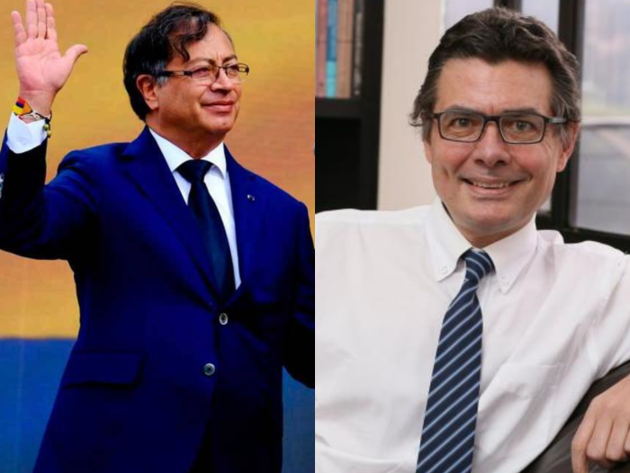

Alejandro Gaviria se reunió con Petro tras su salida del Gobierno
El presidente Gustavo Petro se reunió con el ahora exministro de Educación, Alejandro Gaviria, 24 horas después de anunciarse la salida de este durante la alocución presidencial del pasado 27 de febrero..
Según cuentan fuentes de la Casa de Nariño, Petro y Gaviria tuvieron un almuerzo en el cual el exministro le manifestó sus preocupaciones acerca de la reforma a la salud, la cual fue radicada en la Cámara de Representantes y se encuentra en discusión.
El presidente, por su parte, le extendió la invitación a Gaviria para que siga opinando y proponiendo aportes a la reforma desde el puesto que vaya a ocupar en el futuro.
"Almorzamos los dos juntos, cordial, amable. No revisitamos las causas de mi salida. Hablamos de las reformas en general, de la reforma de la salud y lo que viene para el país. Yo le hice un comentario sobre la necesidad de tener en cuenta también las clases medias, aquellos que sienten el país, que tienen algo que perder. Él hizo una exposición larga de un estudio que acaba de salir sobre temas de cambio climático, pero en general fue una conversación, uno podría decir, académica", indicó Gaviria.

Ver noticia completa
Estos encuentros se dan un día después de la alocución presidencial en la cual Petro le anunció al país la salida de los tres miembros de su gabinete inicial, por lo cual se habla de un revolcón ministerial.
“Los ministros Alejandro Gaviria, María Isabel Urrutia y Patricia Ariza, con sus aportes han contribuido a enriquecer el debate y a iniciar los cambios por los que votó el país. Y los invito a que desde el lugar donde estén nos ayuden a construir este pacto social”, mencionó el presidente durante la alocución.